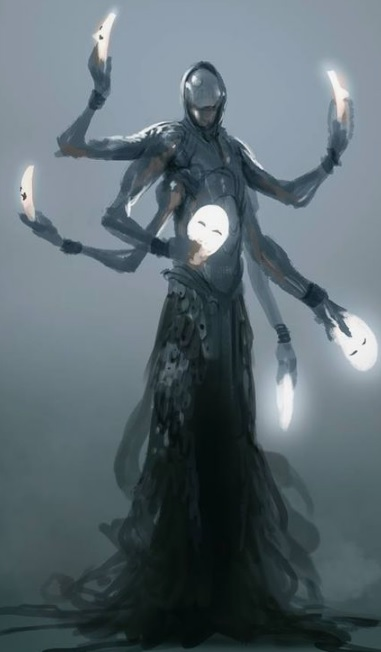

Şekil değiştirme konusunda uzman büyücü sınıfıdır. Bütün büyücü sınıflarda olduğu gibi bu sınıfta da büyülerin etkinliği için zeka, saldırılardan kolay kaçabilmek için ise çeviklik çok önemlidir. Irk seçimi buna göre yapılmalıdır.
Seviye 1
Hançer: Hançer kullanabilme yeteneğidir.Kırbaç: Kırbaç kullanabilme yeteneğidir.
Zayi: Dövüş sırasında anlık kaybolup yeniden belirmedir.
Anımsa: Ait olduğunun dinin tapınağına dönüş komutudur. Seviye 10a kadar geçerlidir. (anımsa)
Parşömen: Parşömen okuma yeteneğidir.(oku yazdıktan sonra okunacak parşömenin adı yazılır.)
Tılsımlar: Büyü kullanabilme ile ilgili bir yetenektir.(otomatik)
Değnekler: Değnek kullanabilme yeteneğidir.(otomatik)
Seviye 6
Meditasyon: Hızlı iyileşmeye benzer. Yöntem olarak uyurken veya dinlenirken zihin yoğunlaşması kullanılır ve büyü gücünün (mana) yenilenmesi sağlanır. (otomatik)Seviye 7
Pazarlık: Alışverişlerde alırken ucuza alma, satarken pahalıya satma yeteneğidir. Bu yetenek kullanılarak dükkan sahibi fiyat konusunda ikna edilmeye çalışılır. Hırsızlar pazarlık konusunda doğuştan yeteneklidirler. (otomatik)Seviye 10
Büyü tanıma: Odada yapılan büyülerin isimlerini görebilmeyi sağlayan yetenek.(otomatik)Seviye 14
Trans: İyileşmenin hızını arttıran yetenek.(otomatik)Seviye 15
Hızlı iyileşme: Yaşam puanının daha hızlı yenilenmesini sağlayan yetenek. Bu yetenek yürürken de, dinlenirken de, uyurken de çalışır.(otomatik)Seviye 23
Karşılama: Kurbanın saldırısını silahla karşılamak için kullanılan yetenek. (otomatik)Seviye 25
İkili hamle: Dövüşlerde bir turda iki hamle yapabilmek için gerekli yetenek. (otomatik)Seviye 45
Çıplak el: Silahsızken de etkili dövüşebilmeyi sağlayan yetenek. (otomatik)Seviye 48
Kırbaçla: Silah olarak bir kırbaç kullanırken, kırbacı savurarak düşmanın kaçmasını engelleyecek şekilde zarar verme yeteneği.Seviye 1
Fişek: Düşamana zarar veren bir büyüdür. Büyünün seviyesi yükseldikçe vereceği zarar artar.(büyü fişekVantrolog: Başka birinin ağzından konuşma büyüsüdür. (büyü vantrolog
Seviye 4
Asılı disk: Ağırlık taşımak için kullanılan bir disk yaratma büyüsü. (büyü asılı)Seviye 5
Ayaz: Zarar vermenin yanısıra kurbanın gücünü de azaltan büyü. (büyü ayaz düşmanadı)Seviye 6
Büyü saptama: Büyülü eşyaları saptamayı sağlayan yetenek.(büyü büyü)Seviye 9
Şok kavrayışı: Kurban üzerine zarar uygular. Büyünün seviyesi yükseldikçe vereceği zarar da artar.(büyü şok)Seviye 10
Görünmezi saptama: Büyücünün görünmezleri saptamak için kendi gözlerine yaptığı büyüdür.(büyü 'görünmezi saptama')Seviye 11
Daimi ışık: Bir eşyanın ışık yaymaya başlamasını sağlayan veya bir ışık kaynağı yaratan büyü.(büyü daimi, büyü daimi eşya_adı)Seviye 12
Kem saptama: Kötü ruhları saptayabilmek için büyücünün kendi gözlerine yaptığı büyüdür.(büyü kem) İyi saptama: Büyücünün iyi ruhları saptamak için kendi gözlerine yaptığı büyü.(büyü iyi)Seviye 13
Görünmezlik: Hedefin görünmez olmasını sağlayan büyü.(büyü görünmezlik)Seviye 14
Yanan eller: Hedefe zarar veren bir çeşit büyü.(büyü yanan düşman_adı)Seviye 15
Cin ateşi: Kurbanı kolay yaralanmasını sağlayan bir aura ile çevreler.(büyü cin düşman_adı)Seviye 17
Silah yükselt: Silahların özelliklerini yükseltmek için kullanılan büyü.(büyü silah silah_adı)Seviye 18
Isı görüşü: Karanlıkta ısı yayan canlıları sezmeye yarar.(büyü ısı)Seviye 19
Uçma: Uçmayı sağlayan büyü.(büyü uçma hedef_adı)Zayıflatma: Kurbanın gücünü azaltır ve zayıflamasını sağlar.(büyü zayıf düşman_adı)
Seviye 20
Körlük: Kurbanı kör etmek maksadıyla kullanılır.(büyü körlük düşman_adı)Seviye 21
Ateş geçirmez: Eşyayı ateşe karşı dayanıklı hale getiren büyü.(büyü 'ateş geçirmez' eşya_adı)Seviye 22
Renk spreyi: Düşmana zarar veren bir büyü.(büyü renk düşman_adı)Uzak görüş: Normalden daha uzağı görmeyi sağlayan büyü.(büyü uzak)
Seviye 23
Yıldırım: Kurban üzerine zarar uygular. Büyünün seviyesi yükseldikçe vereceği zarar da artar.(büyü yıldırım düşman_adı)Yavaşlatma: Kurbanın çevikliğini azaltmak için kullanılır.(büyü yavaş düşman_adı)
Nakil: Büyüyü yapanı diyarın rastgele bir odasına nakil eder.(büyü nakil)
Seviye 24
Hız: Büyücünün hedefi hızlandırmak, çevikliğini artırmak için kullandığı büyü. (büyü hız hedef_adı)Saydamlık: Kişiyi kapılardan geçecek şekilde saydamlaştırır.(büyü saydam)
Çağrı: Uzaktaki bir oyuncuyu ya da mobu büyüyü yapanın yanına transfer etmeyi sağlar.(büyü çağrı çağrılanın_adı)Seviye 25
Tanımlama: Eşyanın özelliklerini ayrıntılı bir şekilde görmeyi sağlayan büyü. (büyü tanımlama eşya_adı)Seviye 26
Koruma kalkanı: Kişiyi koruyucu bir kalkanla çevreler.(büyü koruma)Seviye 27
Zehir: Kurbanı zehirlemeyi sağlayan yetenek.(büyü zehir düşman_adı)Cin sisi: Odada saklananları ortaya çıkaran mor bir duman oluşturur.(büyü 'cin sisi')
Geçit: Hedefe bir geçit açar. (büyü geçit hedef_adı)
Seviye 28
İptal: Kurban üzerinde etkili olan büyüleri kaldırmak için kullanılan bir büyüdür.(büyü iptal kurban_adı)Sülfür yağmuru: Kurban üzerine zarar uygular. Büyünün seviyesi yükseldikçe vereceği zarar da artar.(büyü sülfür düşman_adı)
Seviye 29
Demir gövde: Büyüden etkilenen kişinin derisini bir demir gibi sertleştirmeyi sağlar.(büyü demir hedef_adı)Yönelim saptama: Hedefin yönelimini saptamaya yarar.(büyü yönelim hedef_adı)
Nesne bulma: Bir eşyanın diyarın neresinde bulunduğunu bulmaya yarar.
(büyü nesne nesne_adı) Şarj: Değnekleri şarj etmek için kullanılan büyü.(büyü şarj değnek_adı)Seviye 30
Hava kontrolü: Havanın durumunu iyileştiren veya kötüleştiren büyü.(büyü hava iyi, büyü hava kötü)Dev gücü: Hedefin gücünü arttıran büyü.(büyü dev hedef_adı)
Seviye 31
Lanet: Bir eşyayı veya kurbanı lanetlemeyi sağlayan büyü.(büyü lanet düşman_adı, büyü lanet nesne_adı)Seviye 32
Anımsama sözcüğü: Kendi dininin tapınağına dönmeyi sağlayan büyü.(büyü anımsama)Seviye 33
Şimşek zinciri: Bir şimşek topunun elden ele dolaşması ve dokunduğu herkese zarar vermesi üzerine kuruludur. Enerji zarar verdikçe söner ve en sonunda yitip gider.(büyü şimşek)Bağ: Tüm mananızı hedef karaktere geçirmenizi sağlar.(büyü bağ hedef_adı)
Veba: Kurbanın büyülü veba hastalığına yakalanmasına neden olur. Veba hastalığı kurbanın gücünü azaltır ve tedavi edilmezse kısa sürede ölümle sonuçlanır. Vebanın bir diğer özelliği ise bulaşıcı bir virüs yaymasıdır.
Kalabalık bölgelerde dolaşan bir vebalı birçok kişinin bu hastalığı kapmasına neden olabilir.(büyü veba düşman_adı)
Seviye 34
Manyetizma: Kurban üzerine zarar uygular. Büyünün seviyesi yükseldikçe vereceği zarar da artar.(büyü manyetizma düşman_adı)Seviye 35
Zehir saptama: Zehirli eşyaları saptamayı sağlayan büyü.(büyü 'zehir saptama' eşya_adı)Seviye 36
Beceriksizlik: Kurbanın gücünü ve çevikliğini olumsuz yönde etkileyen büyü. (büyü beceriksiz düşman_adı)Seviye 38
Genişleme: Kişinin vücut ebatlarını artıran büyü.(büyü genişleme hedef_adı)Seviye 39
Uyku: Kurbanı uyutmak için kullanılır.(büyü uyku düşman_adı)Seviye 40
Gelişmiş saptama: Gelişmiş görünmezliğe sahip olanları görmeye yarar. (büyü 'gelişmiş saptama')Köprü: Bir moba veya oyuncuya geçit açmak için kullanılır. (büyü köprü isim)
Şokçu tuzak: Odayı şok dalgalarıyla doldurur. Bu dalgalar odada bulunan kurbana zarar verir.(büyü 'şokçu tuzak')Seviye 41
Yakıcı su: Kurban üzerine zarar uygular. Büyünün seviyesi yükseldikçe vereceği zarar da artar.(büyü yakıcı düşman_adı)Büyü defet: Büyüleri iptal etmeyi sağlayan büyü.(büyü defet düşman_adı)
Seviye 42
Toplu görünmezlik: Gruptakilerin tümünün görünmez olmasını sağlar.(büyü 'toplu görünmezlik')Seviye 43
Gelişmiş görünmezlik: İleri seviyede bir görünmezlik büyüsüdür.(büyü 'gelişmiş görünmezlik')Seviye 48
Asit oku: Kurban üzerine zarar uygular. Büyünün seviyesi yükseldikçe vereceği zarar da artar.(büyü 'asit oku' kurban_adı) Çığlık: Odada bulunanlara zarar veren düşük frekansta bir çığlık oluşturmayı sağlar.(büyü çığlık)Boğma: Kurbanın nefes almasını engeller.(büyü boğma düşman_adı)
Seviye 49
Gizemli düş: Odayı uyutucu bir gizemle doldurur.(büyü gizem)Seviye 50
Onar: Eşyayı onarmayı sağlar.(büyü onar eşya_adı)Seviye 53
Kalkanlama: Gerçek kaynağa erişerek düşmanın çevresinde bir kalkan oluşturmayı sağlar.(büyü kalkanlama düşman_adı)Seviye 55
Kem defet: Kem varlıklara zarar veren büyü.(büyü 'kem defet' düşman_adı)Seviye 56
Alev topu: Hedefe alevden bir top göndererek ona zarar vermeyi amaçlayan büyü.(büyü 'alev topu' düşman_adı)Uyuşukluk sisi: Odayı uyuşukluk yaratıp kişileri yavaşlatan bir sis ile doldurur.(büyü uyuşukluk)
Seviye 57
İyilik defet: İyi varlıklara zarar veren büyü.(büyü iyilik düşman_adı)Seviye 58
Yumuşatma: Kurbanın çevikliğini azaltmak için kullanılır.(büyü yumuşat düşman_adı)Seviye 60
Neksus: Hedefe iki yönlü bir geçit açar. Geçitin açılabilmesi için ek bir güç kaynağına ihtiyaç duyar. (büyü neksus hedef_adı)Seviye 61
Ejderha nefesi: Kurbana zarar veren büyü.(büyü ejderha düşman_adı)Seviye 63
Asit patlaması: Kurban üzerine zarar uygular. Büyünün seviyesi yükseldikçe vereceği zarar da artar.(büyü “asit patlaması” kurban_adı)Krom küre: Kurbana zarar verirken kimi zaman kör eden ve yavaşlatan büyü.
(büyü 'krom küre' düşman_adı)Seviye 64
Taktak: Kilitli kapıları açmaya yarar.(büyü taktak)Seviye 69
Ağ: Kurbanın herhangi bir yöne ilerlemesini engeller ve kurbanın çevikliği ile vuruşzarını düşürür.(büyü ağ düşman_adı)Seviye 72
Büyü direnci: Kişiyi büyüye karşı dirençli kılar.(büyü 'büyü direnci')Seviye 73
Binbir şekil: Büyüyü kullananı belirttiği ırka dönüştürür. Böylece kişi takip ediliyorsa izini kaybettirebilir.(büyü binbir ırk_adı)